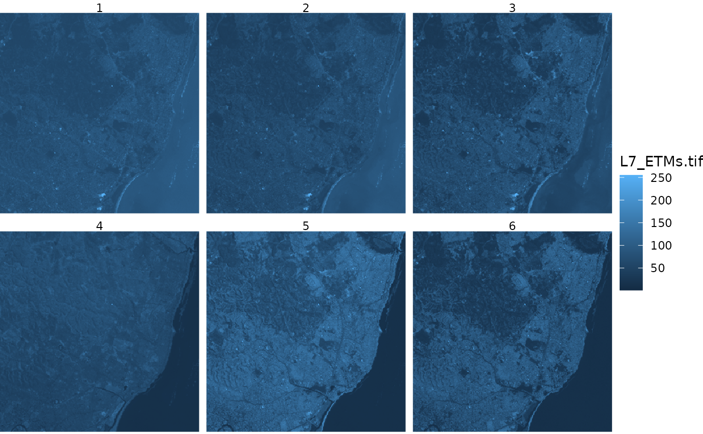

ggplot geom for stars objects
Usage
geom_stars(
mapping = NULL,
data = NULL,
...,
downsample = 0,
sf = FALSE,
na.action = na.pass
)
theme_stars(...)Arguments
- mapping
see geom_raster
- data
see geom_raster
- ...
see geom_raster
- downsample
downsampling rate: e.g. 3 keeps rows and cols 1, 4, 7, 10 etc.; a value of 0 does not downsample; can be specified for each dimension, e.g.
c(5,5,0)to downsample the first two dimensions but not the third.- sf
logical; if
TRUErasters will be converted to polygons and plotted using geom_sf.- na.action
function; if
NAvalues need to be removed before plotting use the valuena.omithere (only applies to objects with raster dimensions)
Details
geom_stars returns (a call to) either geom_raster, geom_tile, or geom_sf, depending on the raster or vector geometry; for the first to, an aes call is constructed with the raster dimension names and the first array as fill variable. Further calls to coord_equal and facet_wrap are needed to control aspect ratio and the layers to be plotted; see examples. If a stars array contains hex color values, and no fill parameter is given, the color values are used as fill color; see the example below.
If visual artefacts occur (Moiré-Effekt), then see the details section of plot.stars
Examples
system.file("tif/L7_ETMs.tif", package = "stars") %>% read_stars() -> x
if (require(ggplot2, quietly = TRUE)) {
ggplot() + geom_stars(data = x) +
coord_equal() +
facet_wrap(~band) +
theme_void() +
scale_x_discrete(expand=c(0,0))+
scale_y_discrete(expand=c(0,0))
# plot rgb composite:
st_as_stars(L7_ETMs)[,,,1:3] |> st_rgb() -> x # x contains colors as pixel values
ggplot() + geom_stars(data = x)
}
